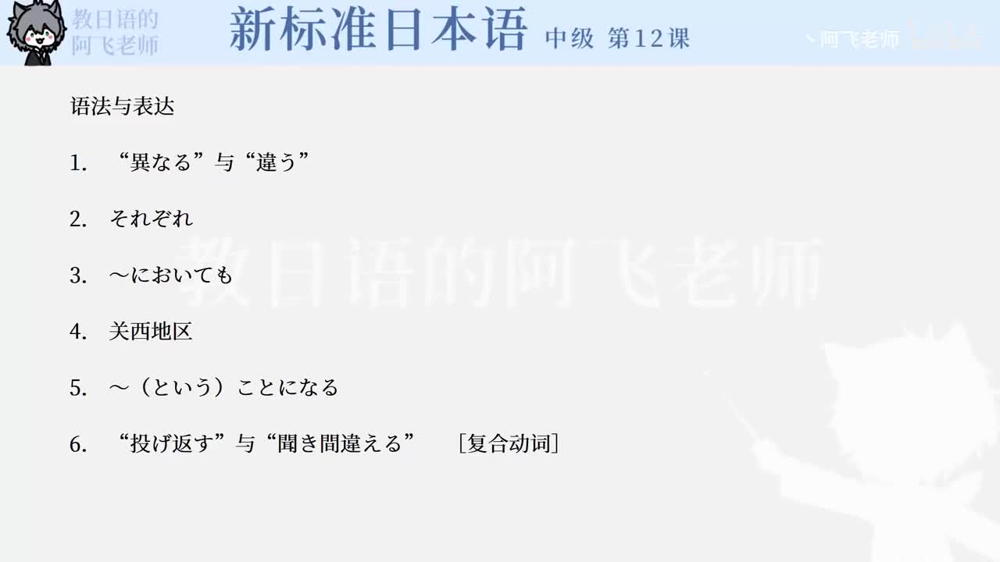

Bilibili P158 · Reading Text
方言と共通語
从中国多民族与方言差异切入，比较日语中东京、关西等地区的发音差异，并通过误解故事理解方言与共通语的关系。
全篇听力精讲
按 8 段说明文轮播。每段依次播放原文、中文意思、结构、断句、语法和词汇。
这篇文章在讲什么
方言差异中国语和日语中都存在地区/群体差异。
发音例子「箸」和「橋」在东京与关西读法不同。
误解故事「なげる」「ほかす」展示方言造成的误会。
共通语普及媒体使用共通语，地方日常生活中也逐渐浸透。
逐段精读
重点语法与说明文表达
核心词汇
练习与复习
来源说明：视频标题、时长、CID 和首帧来自 Bilibili 公开视频接口；课文原文来自本地 LearnJapan 课程数据并按页面学习格式整理。